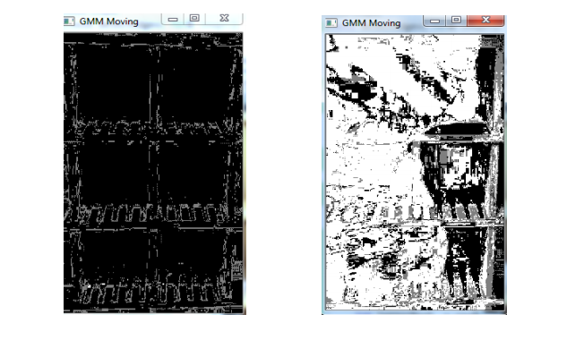
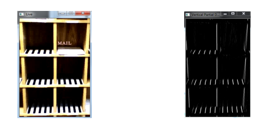

Code 'N' Stuff
Home
Projects
Contact
Leaving Cert. Biology Quiz App
Libgdx Space Invaders Game
Real Time Post Box Notifier
Real Time Post Box Notifications
Motion detection using a
Gaussian mixture model
Detects post using first derivative edge detection -
Sobel
Source Code

